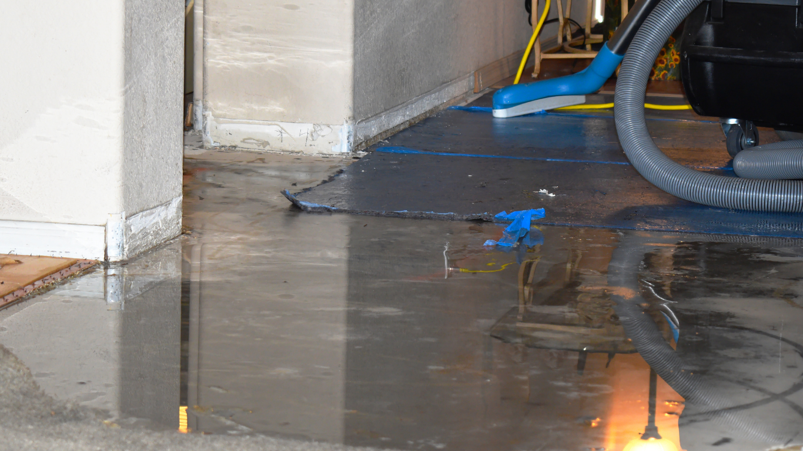

We provide fast-response emergency water removal services in Fort Worth that help homeowners and businesses minimize damage, prevent mold growth, and begin recovery immediately after water intrusion.
Water damage can spread through a property within minutes, affecting flooring, drywall, furniture, and structural materials long before visible signs fully appear. Whether caused by burst pipes, storms, appliance failures, or overflowing plumbing fixtures, standing water creates serious risks when not addressed quickly. Understanding how emergency water removal works helps Fort Worth property owners respond faster and reduce long-term restoration costs.
The first few hours after water intrusion are critical. Moisture spreads rapidly into porous materials such as carpet, insulation, drywall, and wood framing. As water travels, it weakens structural components and increases the likelihood of mold growth.
Standing water also creates safety concerns. Electrical hazards, contaminated water exposure, and slippery surfaces make delayed cleanup dangerous for homeowners and occupants. Fast professional extraction reduces these risks while limiting the extent of damage throughout the property.
Many Fort Worth homes experience water damage from plumbing failures, severe storms, and seasonal freezes. Quick response through professional water damage restoration services helps stabilize affected areas before conditions worsen.
Water emergencies can happen unexpectedly and often require immediate action. Burst pipes remain one of the leading causes of residential water damage, especially during colder weather when freezing temperatures place pressure on plumbing systems.
Other common causes include:
North Texas storms can also overwhelm roofing systems and drainage areas, allowing water to enter attics, ceilings, and walls. Even small leaks can lead to hidden moisture problems if not handled promptly.
Professional water removal begins with a full assessment of the affected areas. Restoration teams identify the source of water intrusion, determine contamination levels, and evaluate how far moisture has spread throughout the property.
High-powered extraction equipment removes standing water quickly from flooring, carpets, and structural surfaces. After extraction, industrial drying equipment and dehumidifiers are placed strategically to eliminate trapped moisture from walls, subfloors, and air spaces.
Moisture detection tools help technicians locate hidden water that may not be visible to the eye. This step is essential because unnoticed moisture often leads to secondary damage and mold growth days after the initial incident. Comprehensive restoration services help ensure both visible and hidden damage are addressed properly.
Mold can begin developing within 24 to 48 hours after water exposure. Warm indoor conditions and lingering moisture create the ideal environment for spores to spread behind walls, under flooring, and inside insulation.
Professional drying methods reduce humidity levels quickly, helping prevent contamination before it starts. Restoration teams also sanitize affected surfaces and remove damaged materials when necessary to reduce long-term risks.
Homeowners who delay water removal often face more extensive repairs later, especially when hidden moisture leads to structural deterioration or indoor air quality concerns. Fast mitigation significantly improves recovery timelines and limits repair costs.
One of the biggest concerns is whether the property can be saved without major reconstruction. Immediate extraction and drying often preserve flooring, cabinetry, and drywall that might otherwise require replacement.
Insurance support is another major priority. Water emergencies create stress quickly, especially when homeowners are unsure how to document damage properly. Professional restoration teams assist by providing moisture readings, photos, and detailed assessments that support insurance claims.
Families also worry about how long recovery will take. While every project is different, rapid response shortens drying times and helps restore normal routines faster. According to the Federal Emergency Management Agency, acting quickly after water intrusion is one of the most important steps in reducing long-term property damage.
Some water damage is obvious, but hidden moisture can continue spreading even after surfaces appear dry. Homeowners should watch for warning signs such as:
These signs often indicate trapped moisture beneath surfaces. Professional equipment allows technicians to locate and remove hidden water before further deterioration occurs.
Attempting cleanup without commercial drying equipment may leave moisture behind, increasing the risk of future mold or structural problems.
Once water is removed, preventing secondary damage becomes the next priority. Drying, dehumidification, and sanitation are essential to restoring a safe environment. Materials that remain damp for extended periods often weaken, discolor, or develop odors.
Professional restoration teams monitor moisture levels throughout the drying process to ensure affected materials reach safe conditions before reconstruction begins. This careful approach helps reduce recurring issues and supports long-term property protection.
Routine maintenance also lowers future risks. Inspecting plumbing systems, maintaining roofing materials, and checking appliances regularly can help homeowners avoid unexpected water emergencies.
Water emergencies can feel overwhelming, especially when damage spreads quickly through a home or business. Fast action makes a major difference in limiting repairs, protecting indoor air quality, and restoring property safely.
If you’re looking for reliable emergency water removal services in Fort Worth, SWAT Restoration provides 24/7 emergency response, water extraction, drying, and reconstruction support throughout North Texas. Our team acts quickly, communicates clearly, and works efficiently to restore your property from the first inspection through final repairs. When unexpected water damage threatens your home, having experienced restoration professionals on your side helps make recovery faster and less stressful.